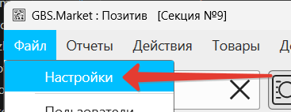
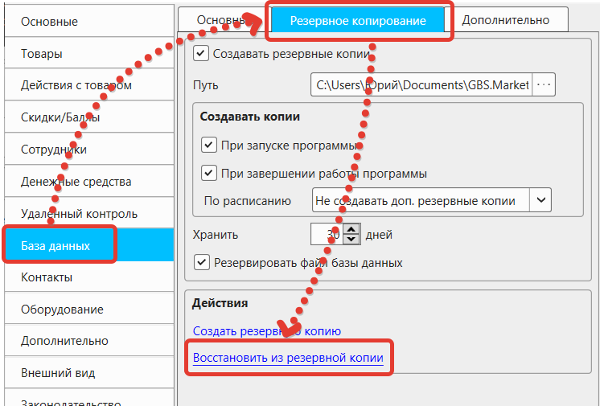
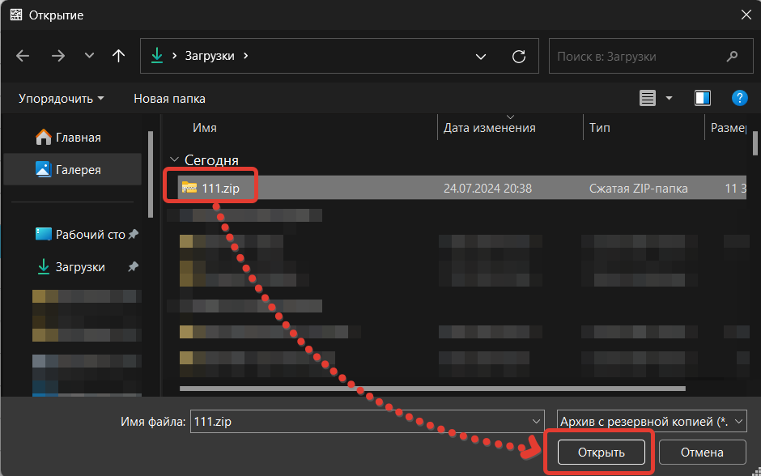
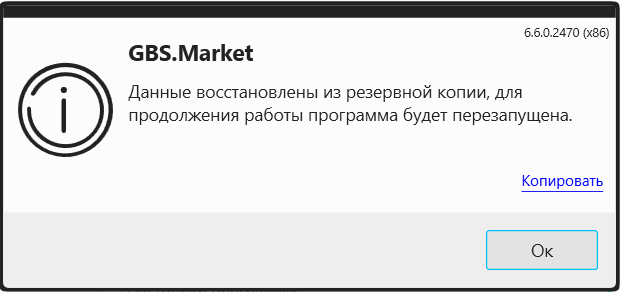

Когда требуется восстановление
Восстановление данных из резервной копии может потребоваться в случае утраты данных в связи с выходом компьютера из строя или при переносе данных на другое устройство.
Восстановление данных
Для восстановление данных из резервной копии необходимо выполнить следующие действия.
Из меню на главной форме откройте настройки программы: Файл – Настройки
Перейдите в раздел "База данных", затем на вкладку "Резервное копирование" и нажмите "Восстановить из резервной копии"
Далее программа предложит выбрать файл резервной копии. Выберите ранее созданный файл резервной копии и нажмите "Открыть".
После выбора архива резервной копии программа предложит выбрать, какие данные необходимо восстановить:
Выбор данных для восстановления
- База данных – вся информация программы (товары, сотрудники, продажи, поступления)
- Настройки программы – все конфигурации и параметры программы
Info
Возможность выбора данных (базы данных и/или настроек) для восстановления добавлена начиная с версии 6.6.0.2470
После успешного восстановления данных программа сообщит о результате и будет перезапущена.
Важно!
При восстановлении данных из резервной копии все файлы, которые имеются в файле резервной копии, будут заменены. Т.е. если вы не сохранили текущие данные программы – они будут утеряны после восстановления из резервной копии!
Предупреждение
Ручная распаковка архива с данными может не привести к восстановлению данных, т.к. база данных в таком архиве сохраняются в специальном формате.
Краткая инструкция
- Откройте Файл → Настройки
- Перейдите в раздел "База данных"
- Откройте вкладку "Резервное копирование"
- Нажмите "Восстановить из резервной копии"
- Выберите файл резервной копии
- Нажмите "Открыть"
- Выберите данные для восстановления
- Подтвердите восстановление
- Дождитесь завершения процесса
- Программа перезапустится автоматически
Процесс восстановления
- Программа автоматически извлекает данные из архива
- Заменяет текущие данные выбранными из резервной копии
- Восстанавливает настройки программы (если выбрано)
- Восстанавливает базу данных (если выбрано)
- Перезапускает программу для применения изменений
- Сообщает о результате операции
Полезные советы
- Создайте резервную копию текущих данных перед восстановлением
- Убедитесь, что выбран правильный файл резервной копии
- Проверьте версию программы для доступности выбора данных
- Закройте все другие программы перед восстановлением
- Не прерывайте процесс восстановления
- Проверьте результат после перезапуска программы
- Сохраните резервную копию в безопасном месте
- Используйте только созданные программой резервные копии
Дополнительная информация
- Восстановление возможно только из файлов, созданных программой
- Процесс восстановления необратим - текущие данные будут заменены
- Программа автоматически перезапускается после восстановления
- Выбор данных доступен в версии 6.6.0.2470 и новее
- Ручная распаковка архива не восстанавливает данные
- База данных сохраняется в специальном формате
- Восстановление может занять время в зависимости от размера данных
- Все настройки программы восстанавливаются полностью